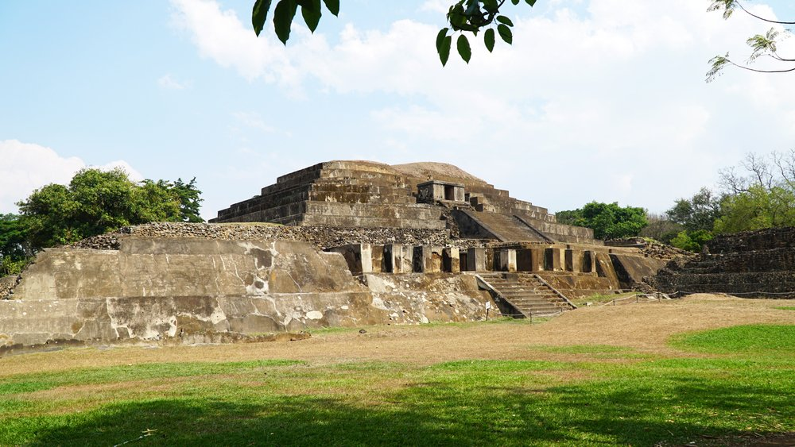
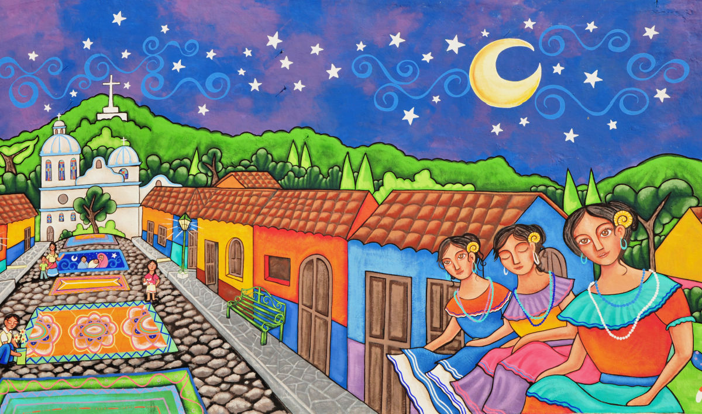
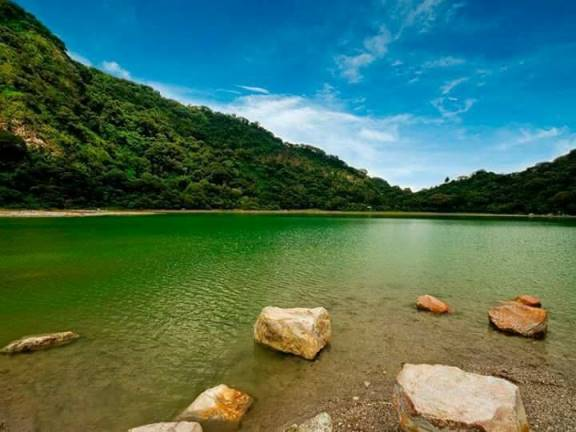
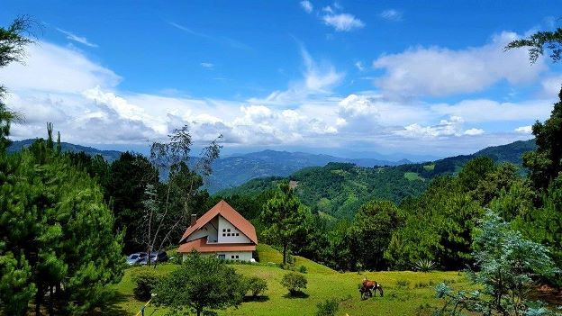
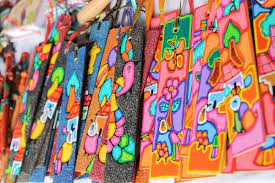
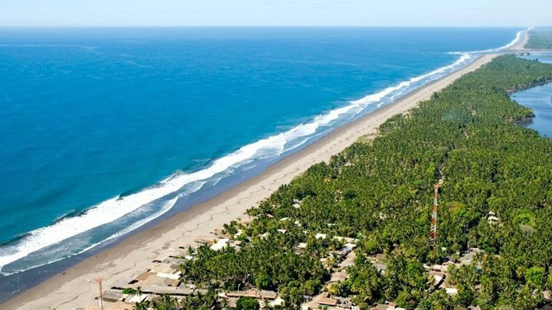

El Salvador, popularmente conocido como el Pulgarcito de América, es un país que posee diversas rutas turísticas que permiten a los visitantes disfrutar de aspectos como la gastronomía, la naturaleza, el ecosistema volcánico único del país, la arqueología, la arquitectura colonial, la aventura o el surf, pueblos vivos, entre otros.
Debido a la diversidad de opciones se han creado diversas rutas turísticas de El Salvador que agrupan los destinos existentes en una zona geográfica y que comparten características en común, para que puedan ser visitados en unas pocas horas o en un solo día. Por lo general estos recorridos se hacen por medio de guías turísticos los cuales pueden encontrarse en las localidades de la ruta o por medio de algún operador turístico salvadoreño. La ruta turística más visitada de El Salvador es la ruta Sol y Playa que comprende la zona costera del país y en segundo lugar de popularidad se encuentra la ruta de Las Flores, la cual comprende algunos municipios del occidente del país.
Estas rutas han sido creadas para ofrecer a los turistas nacionales y extranjeros una opción para que puedan conocer y descubrir la belleza natural de los paisajes, la cultura y su gente. Al mismo tiempo el turismo contribuye al desarrollo local ya que permite la generación de empleo. Te invitamos a conocer El Salvador por medio de sus diferentes rutas turísticas, en las cuales sin duda alguna te sorprenderás y descubrirás nuevas cosas de nuestro país
|  |  |  |
|---|---|---|
| Ruta Arqueologica | Ruta de las Flores | Ruta las Mil cumbres |
|  | |
 |
| Ruta Fresca | Ruta monseñor romero | Paraiso Artesanal |
|  | ||
| Playas de el Salvador |